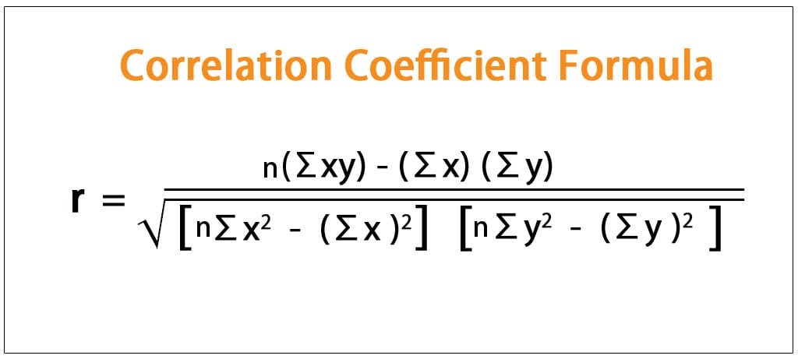
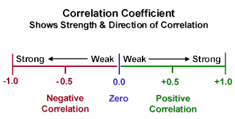

Anyone can be in a hurry sometimes or we might just feel lazy and want to make something with minmal time, so here are some ways to find something that you can make with your given time.
Each bubble below represents a recipes cook time vs prep time and the size of the bubble correlates to the number of ingredients used.
You can use this chart to compare your recipes cook time vs prep time.
Let's do some math
 On the right is a chart of cook time vs prep time with cook time on the x axis. By inserting our dataset into a correlation coefficient calculator, the result is a R value of 0.0644. This indicates there is virtually no correlation between the amount of cook time and prep time of a recipe. In other words, the amount it takes to prep your food does not affect the cook time and vice versa.
Now we do the same process for total time and prep time. The results yield a R value of 0.1998. This is a stronger correlation than cook time vs prep time but still considered a very weak correlation, thus it is negligible.
Last but not least let's check if there is any correlation between cooking time and total time. As you can see already from the chart it is quite linear and the R value is a whopping 0.9907, which means that high X variable scores fo with high Y variable scores (and vice versa).
Once again it might come as a surprise, but the R value for total time vs number of ingredients is merely 0.0818. This is another positive yet very weak correlation value.
One would assume that the more ingredients you have will result in a longer preperation time, however, the data says otherwise. With an R value of 0.2795, prep time vs number of ingredients have a weak association.
No matter how long it takes to prepare your food or how many ingredients there are in the recipe, the total time is almost a 1 to 1 ratio with the time it takes to cook the food. Therefore, if time is of the essence, perhaps it is more wise to choose a recipe with a short cooking time.